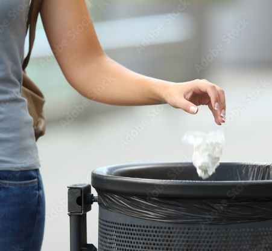
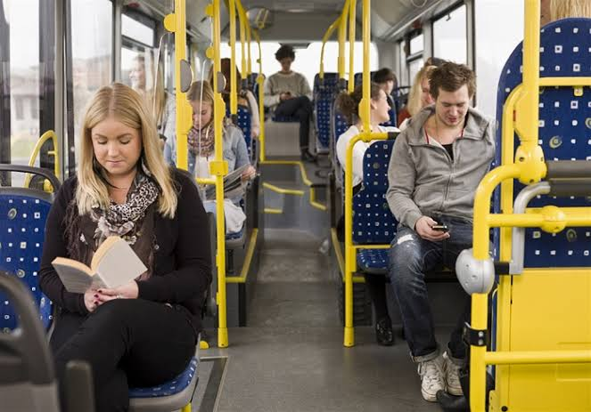

Pencemaran lingkungan adalah suatu kondisi dimana lingkungan sedang mengalami perubahan akibat masuknya zat atau hal apapun yang mengganggu keseimbangan alam dan ekosistem. Pencemaran lingkungan dapat terjadi ketika suatu komponen masuk ke udara, air, atau pun tanah yang menurunkan kualitas lingkungan. Komponen yang masuk kedalam elemen elemen lingkungan biasanya berasal dari kegiatan manusia seperti limbah dari buang sampah sembarangan, polusi, dan penggunaan barang non ramah lingkungan.
Pencemaran Lingkungan
Natascha/IX-3/31
Dampak
Pencemaran lingkungan tidak hanya berdampak pada lingkungan dan alam tetapi juga pada manusia dan makhluk hidup lainnya. Sampah yang menumpuk dapat menjadi tempat berkembangnya penyakit. Limbah yang masuk ke sungai atau perairan juga dapat mencemari kehidupan yang ada di dalamnya. Polusi juga dapat membuat kualitas udara menjadi lebih buruk dan berpotensi menyerang saluran pernapasan. Sampah plastik yang ke laut dapat membahayakan hewan di dalam dan juga mengganggu habitat mereka. Jika pencemaran ini terus meningkat, keseimbangan ekosistem dapat terganggu. Hal ini menunjukkan pentingnya mengurangi sumber pencemaran dalam kehidupan sehari-hari.
BEBERAPA HAL YANG DAPAT DILAKUKAN

Buang Sampah pada Tempatnya

Menggunakan Barang Eco-Friendly

Mengurangi Transportasi Pribadi